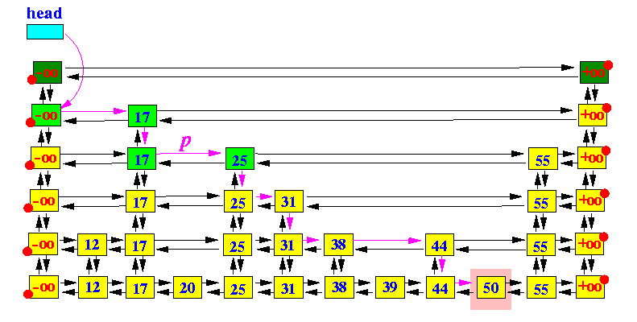
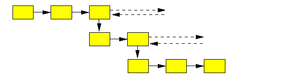
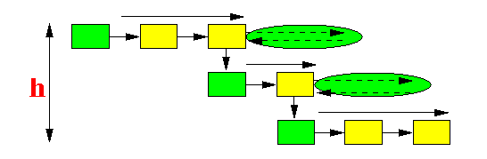
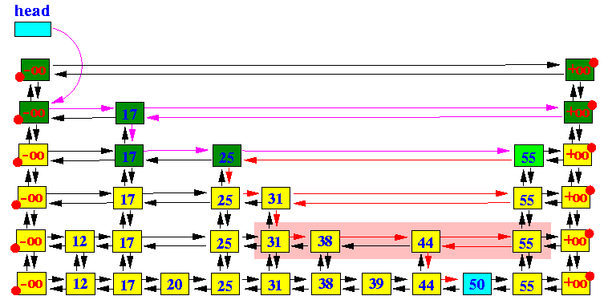
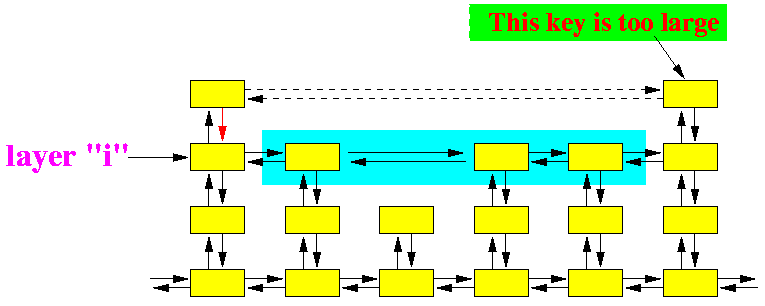
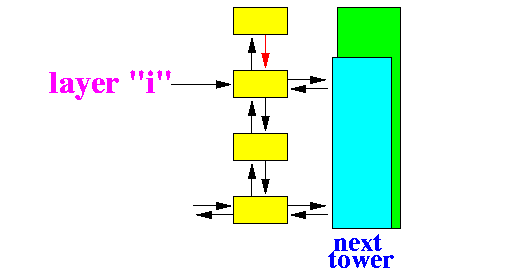

|
|
|
|  |
public HashEntry findEntry(String k)
{
HashEntry p;
/* -----------------
Start at "head"
----------------- */
p = head;
/* =========================================
Main search loop
========================================= */
while ( true )
{
/* --------------------------------------------
Search RIGHT until you find a LARGER entry
-------------------------------------------- */
while ( (p.right.key) != HashEntry.posInf &&
(p.right.key).compareTo(k) <= 0 )
{
p = p.right;
}
/* ---------------------------------
Go down one level if you can...
--------------------------------- */
if ( p.down != null )
{
p = p.down;
}
else
break; // We reached the LOWEST level... Exit...
}
return(p); // Nearest p (<= k)
}
|
|  |
|  |
Prelimary result of the run time of the get(k) operation:
# entries visited = # entries visited in level h-1
+ # entries visited in level h-2
+ ....
+ # entries visited in level 0
|
So the average running time of the get(k) operation is apprimately equal to:
Avg run time get(k) ~= Avg(h) + Avg(h) × ( avg # right traversals on one level ) ....... (1) |
|
Case Frequency Cost
-------+-------------+--------
1 f1 C1
2 f2 C2
....
n fn Cn
|
The average cost is equal to:
Avg Cost = f1×C1 + f2×C2 + .... + fn×Cn |
|
|
|
|
|
Goodrich resorts to an approximation....
by looking for:
|
n
Ҏ[ Skip list has height 3log(n) ] = ---
23log(n)
n
= ---
2log(n3)
n
= ---
n3
1
= ---
n2
|
n
Ҏ[ Skip list has height 2log(n) ] = ---
22log(n)
n
= ---
2log(n2)
n
= ---
n2
1
= ---
n
|
n
Ҏ[ Skip list has height log(n) ] = ---
2log(n)
n
= ---
n
= 1
|
That's huge for a probability (it's approximately "certain") !!!
|
One down, one more to go !!!.
|
Example:
|  |
Note:
|
|  |
Conclussion:
|
|  |
How likely is the next tower that you visit has height = i
|
So only towers of height ≥ i are in layer i.
|
|
|
Therefore, the average number consecutive towers of height i in layer i can be computed as follows:
|
Avg # right moves = 0 * (0.5) + 1*(0.5)2 + 2*(0.5)3 ...
= 1 ................... (2)
|
We can use maple to compute this sum:
|\^/| Maple 10 (SUN SPARC SOLARIS)
._|\| |/|_. Copyright (c) Maplesoft, a division of Waterloo Maple Inc. 2005
\ MAPLE / All rights reserved. Maple is a trademark of
<____ ____> Waterloo Maple Inc.
| Type ? for help.
> sum( (k-1)*(1/2)^k, k = 1..infinity);
1
|
run time get(k) ~= h + h×( # right traversals in 1 level ) ....... (1)
(h ~= log(n))
~= log(n) + log(n)×( # right traversals in 1 level ) ....... (2)
(# right traversal in 1 level = # compare op in 1 level)
~= log(n) + log(n)×( 1 )
~= 2×log(n) ........ (3)
|
|